Las patentes de software sólo benefician a las grandes empresas.
La Playstation 2, aún su dificultad para programar, cuenta con un catálogo de lanzamientos (más los actuales) genial, tiene títulos revolucionarios pero lo mejor esta todavía por ver, ya que sus características hacen que explotar su pontencial suponga una cantidad de tiempo muy grande a la que no todas las compañias pueden permitirse. Por eso para ver realmente juegos que se desmarquen creo que tendremos que esperar 1 o 2 años como mínimo. Aquí teneis algunos de los que estan disponibles y otros que llegaran. La lista total abajo del todo.
Metal Gear 2: Sons of Liberty
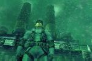 El juego más esperado y revolucionario de cuantos se presentan para Playstation 2. Metal Gear 2: Sons of Liberty pretende al igual que su antecesor romper con todo y impulsar a la PS 2 a lo más alto. Apoyo no le faltará, y publicidad o expectativa tampoco, lo demás esta en manos de Hideo Kojima, creador del juego, y sus compañeros de equipo.
The Bouncer
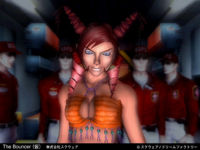
Kessen: Decisive Battle
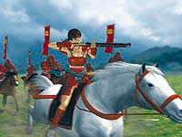 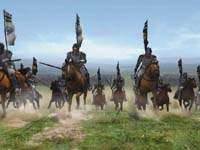
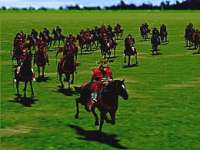 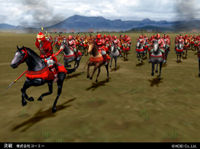
Ridge Racer 5
Nueva version del clásico de Namco. Posiblemente su nombre será Ridge Racer 2 pero aún esta por ver. Esta imágen, al igual que la mayoría la mostraron en el E3 (feria de videojuegos).
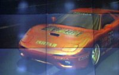
Street Fighter EX 3
Un nuevo Street Fighter...pero de 128 bits!!, tiene que ser desde luego una pasada. Eso sí, la jugabilidad de la serie (dejando de banda los gráficos) esta más que asegurada.
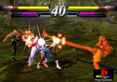
World Soccer 2000
Tiene todas las papeletas para ser el primer título de futbol para Playstation 2 (ya es algo, aunque luego luego a lo mejor es una pasada...). La verdad es que el éxito lo tiene asegurado, pues es de Konami. Sí, el nombre es diferente pero este juego desciente de los International Super Star Soccer (64, '98, '99, Evolution...), pues ahora World Soccer 2000.
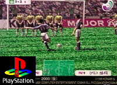
Gran Turismo 2000
El mejor juego de coches de la historia también tendrá su versión para Playstation 2, Gran Turismo 2000 será su nombre (aunque puede cambiar, nunca se sabe...) y ya se vislumbra en algunas imagenes como la de aquí abajo que se no será un juego cualquiera, sin duda dará la nota el nueva consola de Sony y se convierta en un mito (cuidado, que esto es fuerte...). Ya veremos.
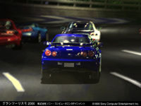 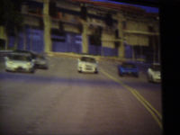
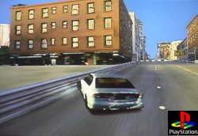
Tekken Tag Tournament
Se supone que el estreno de la cuarta entrega de esta espectacular saga de lucha que según muchos es la mejor actualmente se producirá en Playstation 2. A decir verdad, ya se mostraron imágenes de este juego en la presentación. Que se puede decir, uno de los grandes, obra de Namco, y posiblemente un título rompedor para el estreno de esta consola.
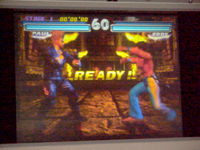 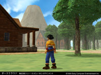
Aquí teneis la lista de los 33 títulos que acompañaran a PS2 en su salida al mercado.
|
AquaAqua-Wetrix 2 (SCI) Disney's Dinosaur (Ubi Soft) Dynasty Warriors (Midas) Eternal Ring (Crave) Evergrace (Crave) F1 World Grand Prix (Konami) F1 World Racing Championship (Ubi Soft) Fantavision (SCEE) FIFA 2001 (Electronic Arts) Gradius III & IV (Konami) International Superstar Soccer (Konami) Kessen (Electronic Arts) Madden NFL 2001 (Electronic Arts) Midnight Club (Take 2) NHL 2001 (Electronic Arts) Pro RC Revenge (Acclaim) |
Rayman Revolution (Ubi Soft) Ready 2 Rumble Boxing Round 2 (Midway) Ridge Racer V (Namco) Silent Scope (Konami) SSX Snowboard Supercross (EA) Super Bust A Move (Acclaim) Swing Away Golf (Electonic Arts) Smugglers Run (Take 2) Summoner (THQ) Tekken Tag Tournament (Namco) Timesplitters (Eidos) Type-S Driving Emotion (EA) Theme Park World (EA) Top Gear Daredevil (Kemco) Track and Field (Konami) Wild Wild Racing (Rage Games) X-Squad (Electronic Arts) |
Otros títulos que se prevee también salgan para Playstation 2, pero sin fecha.
|
Final Fantasy X y XI Resident Evil Bloody Roar II The Next Tomb Raider PowerStone 2 New Cool Boarders Ninja Gaiden Primal Image Golf Paradise |
Unison Armored Core 2 All Star Pro Wrestling Snowboard Super X The World is not Enough Jade Cocoon 2 Bomberman 2001 Oddworld: Munch's Oddysee |
Dark Cloud Onimusha: Demon Warrior Den-Sen Popolocrois III Drummania Virtual Ocean X-Fire Nooks & Crannies |